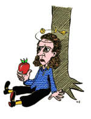

Plantilla:Efemérides - 4 de enero
De:
La Frikipedia
, la enciclopedia
extremadamente
seria.

1643
– Nace en
Inglaterra
el
físico
,
filósofo
,
alquimista
y
matemático
Isaac Newton
, descubridor de la
ley de la gravedad
.
1809
- Nace en
Francia
el
profesor
ciego
Louis Braille, creador del
sistema de lectura para invidentes que lleva su nombre
.
1900
- Nace el ornitólogo
estadounidense
James Bond, cuyo nombre fue tomado por el
escritor
inglés
Ian Fleming para nombrar al
agente secreto británico
de sus
novelas
de
ficción
.
1918
- La
Unión Soviética
reconoce la independencia de
Finlandia
.
1923
- En la
URSS
,
Lenin
recomienda en un
post scriptum
a su testamento la destitución de
Iósif Stalin
, dejando constancia de que el más capacitado para sucederlo es el camarada
Lev Trotsky
.
1932
– En la
India
, la
policía
británica
arresta a
Gandhi
.
1951
- En
Corea
, las
tropas revolucionarias
comunistas
lideradas por Kim Il-Sung recuperan la
ciudad
de Seúl.
1961
- Fallece a los 73 años el físico
austríaco
Erwin Schrödinger
,
Premio Nobel
de
Física
en 1933 y célebre por su experimento del
Gato de Schrödinger
.
1991
- En la
Organización de las Naciones Unidas
se vota unánimemente una condena a
Israel
por su mal trato al pueblo de
Palestina
.
Autor(es):
Fordus
Mad Max
Shadowmura
Frikipedia 2005-2016, Licencia
GFDL 1.2
- Extraído por FrikiLeaks
 De: La Frikipedia, la enciclopedia extremadamente seria.
De: La Frikipedia, la enciclopedia extremadamente seria.